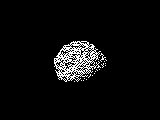
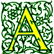
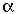

Signs for technical/specialized vocabulary
David Bar-Tzur
Created 27 August 1999, links updated monthly with the help of LinkAlarm.


Asteroids1; Atoms1
EXPLANATION OF THE GLOSSING SYSTEM
(to understand how I describe the signs in this dictionary).
For content knowledge of how to use the physics terms in context, see Guided tutorial in physics for interpreters.
For negotiating and developing temporary signs, see Preparation and sign negotiation
For vocabulary lists to determine helpful signs for a specific discipline, see Vocabulary lists by topic.
- a- (prefix, negation)
- NOT.
- Aaron (אהרון)
- (2h)[A], FTs touch area under the throat, separate while moving to the shoulders, then descend down the sides of the chest. (< the breastplate worn by the High Priest).
- Aaronic (priesthood) (LDS [Mormon])
- [A], PO away, makes arc over NDH [S], PO down, following direction of arm.
- abandon
- (2h)[A], POs ><, FOs away, move downward in the direction of the thing abandoned and hands open to (2h)[5]. For a QuickTime movie of this sign, see ASL browser - abandon.
- abandoned
- (2h)[A], POs ><, FOs away, move towards chest while opening to (2h)[5] and strikes it with the FTs.
- abbot
- MONK SUPERIOR, that is, (2h)[bO] pull up "hood" twice + (2h)[A], POs ><, FOs away, DH begins below NDH and is moved to above NDH in an outward arc.
- abcess
- DH [5:], PO down, FO away, rises up from relaxed NDH. For a movie of this sign, see Dictionary of Sign (ASL) - abscess.
- abdomen
- ~
- (1) [1] outlines abdomen. (2) [5], PO > signer, outlines abdomen. (3) [B], PO > signer, taps stomach with FTs. For a QuickTime movie of this sign, see ASL browser - abdomen.
- four quadrants of the ~
- Use small finger side of [Bb] to slice across the abdomen and then down.
- abdominal cavity
- (2h)[Bb], POs down, FOs ><. There are two movements that happen simultaneously: (1) DH starts at NDS of midchest and moves across torso to the D, and (2) NDH starts at DS waist and moves across waist to its DS + INSIDE.
- abdominal cavity, 9 regions of the
- (2h)[Bb], POs up, FOs ><. There are two movements that happen simultaneously: (1) NDH starts at NDS of the lower torso and moves across torso to the DS side, and (2) DH starts at NDS below the NDH and moves across body to the DS + (2h)[B^] run FTs down middle of chest.
- abdominal region
- (2h)[Bb], POs down, FOs ><. There are two movements that happen simultaneously: (1) DH starts at NDS of midchest and moves across torso to the D, and (2) NDH starts at DS waist and moves across waist to its DS.
- abdominopelvic cavity
- (2h)[Bb], POs up, FOs ><. There are two movements that happen simultaneously: (1) DH starts at NDS just under rib cage and moves across torso to the DS side, and (2) NDH starts at DS at the level of the groin and moves across body to the DS + INSIDE.
- abduct
- DH [5], PO > signer, FO > NDS, is held under elbow of [B] as if it were part of the sign TABLE, and closes to [S] while pulling something suddenly towards the DS. For a QuickTime movie of this sign, see ASL browser - abduct.
- abducted
- DH [5], PO > signer, FO > NDS, is held against chest, then closes to an [S] and placed violently elsewhere.
- Abelian
- A-B-E-L-I-A-N.
- abend
- A,B-END, that is, [A], PO away, FO up, moves along edge of [B], PO > signer, FO > DS, and when DH arrives at the FT of NDH, it changes to a [B] and descends.
- -ability (suffix)
- (1) CAN. (2) CAN+.
- -able (suffix)
- (1) CAN. (2) CAN+.
- abnormal
- (1) NORMAL NOT. (2) SOMETHING WRONG.
- abolitionism
- SLAVE SYSTEM AGAINST, where the first sign is (2h)[S], PO down, crossed at wrists, swing from side to side.
- abort
- ~ (a fetus)
- (1) [A], PO down is placed on [B], PO up and moves up, changes to [5] and throws removed material down. (2) (2h)[5], FOs >< moves towards each other from the sides of the stomach and interlace FTs + [A], PO down is placed on [B], PO up and moves up, changes to 5 and throws removed material down. (3) DH [B^], FO > NDS, touches FT to palm of [B], PO down, FO > DS, then moves down while closing to [O^] with thp.
- ~ (a mission)
- QUIT.
- ~ (computer program)
- [A], PO down is placed on [B], PO up and moves up, changes to [5] and throws removed material down.
- abortion
- (1) [A], PO down is placed on [B], PO up and moves up, changes to 5 and throws removed material down. (2) (2h)[5], FOs >< moves towards each other from the sides of the stomach and interlace FTs + [A], PO down is placed on [B], PO up and moves up, changes to 5 and throws removed material down. (3) DH [B^] touches FT to palm of [B], PO down, FO > DS, then moves down while closing to [O^] with thp.
- Abraham (אברהם)
- (1) [A] strikes between the thumb and forefinger of [B], like BOTHER, but a single movement. (< Angel stopping Abraham from sacrificing his son Isaac.) (2) [A], PO > signer, circles extended forearm like a shield. (3) [A] taps palmside against ND elbow. (< God is called "Magen Avraham - the Shield of Abraham".)
- abrasive
- MATERIAL + ROUGH+. Where the first sign is (2h)[B] hands are held POs up and the thumbs run across the fingertips until the hand closes to an [A]. This is done once to allow both signs to blend while mouthing "abrasive".
- abscissa (x-coordinate)
- (1) A-B-S-C-I-S-S-A. (2) "X"
C-O-O-R-D.
- absent
- ~, absence (attendance)
- [1] strikes middle finger of [open 8], PO down, FO away. Can mean "skip".
- ~ (as in "a decision ~ evidence", Criminal Justice)
- (1) WITHOUT. (2) NONE.
- absolute
- ~ (computers)
- POINT.
- ~ (not relative)
- DEFINITELY, that is, (2h)[5], POs ><, FOs away are held in neutral space and descend slightly and abruptly while closing to (2h)[F].
- absolute error
- MAXIMUM MISTAKE.
- absolute maximum
- MAXIMUM SAY~PERIOD.In the last two joined signs, FTs of [bO] are applied to mouth and then the hand is pronated so that the sign PERIOD is produced.
- absolute minimum
- MINIMUM SAY~PERIOD.In the last two joined signs, FTs of [bO] are applied to mouth and then the hand is pronated so that the sign PERIOD is produced.
- absolute value
- (2h)[1], POs away, FOs up, move at wrist so that they draw vertical parallel lines. E.g., "The absolute value of x = 4." Translation: X, (2h)1outline-CL'draw straight vertical lines on both sides of X', EQUAL FOUR.
- absolute visual magnitude
- M V"subscripted".
- absolute zero
- (1) MINIMUM ZERO. (2) ZERO "K". Note that it is outdated to say "zero degrees Kelvin" so, don't sign ZERO DEGREE "K".
- absolution, absolve (from sin)
- (1)EXCUSE. (2) EXCUSE is signed the normal way for the person's hand dominance and then the sign is executed as if the person had the opposite hand dominance.
- absorb, absorption
- (2h)[5], POs down, are pulled in towards the body and together while closing to (2h)[O^]. The mouth forms "hup" as the breath is sucked in. For a QuickTime movie of this sign, see ASL browser - absorb.
- absorption spectrum
- SPECTRUM ABSORB. That is, NDH [5], PO towards, FO up and DH [B], PO > NDS, FO up. DH pivots at wrist and moves back and forth across ND FTs as if they were gradations on the spectrum + (2h)[5], POs down, are pulled in towards the body and together while closing to (2h)[O^]. The mouth forms "hup" as the breath is sucked in.
- abstain, abstinence
- ~ (from food)
- [F] draws closed FTs across lips.
- ~ (from sex)
- (1) PROCEED SEX, + [X] hooks [1], PO down, FO > DS, and pulls it up slightly. (2) PROCEED SEX, REFUSE.
- abstract, abstraction
- (1) A-IMAGINE. For a QuickTime movie of this sign, see ASL browser - abstract. (2) 5-COLLEGE. Note: Don't use VAGUE.
- absurdism
- [4], PO > NDS, FO up, touches temple and spirals away horizontally with th.
- abundance
- ~, abundant (business and general)
- [5] places palm against top of [S], PO > DS, FO away, and slides against it while wg with elel.
- ~ (chemistry)
- HOW-MUCH PERCENT.
- abuse
- ~ (general)
- A-B-U-S-E.
- emotional ~ (psychological, mental cruelty)
- PICK-ON"over time + sta".
- ~ (physical)
- NDH [1], FO up, is repeatedly struck while DH [S], PO > NDS, moves from side to side.
- indecent liberties
- WRONG* TOUCH, with malevolent facial expression. A legal term that means taking advantage of someone's age, physical disability, or state of mind to touch them sexually; a form of sexual abuse.
- sexual ~
- (1) If the term is used generally, SEX (which see) A-B-U-S-E. Otherwise it is best to be as specific as possible. Other possible general expressions, if appropriate, are: (2) SEX, AWFUL HAPPEN. (3) SEX, WRONG TOUCH. (4) SEX, BAD TOUCH. (5) SEX DON'T-WANT, FORCE. (6) Use middle finger of [open 8] to touch the part of the body involved. (7) Middle finger of [open 8] flexes while rubbing down palm of [B], PO up, FO away, with tongue against teeth like pronouncing the letter "L". (8) (2h)[5:], POs down, FOs away, touch thumbs and pivot alt. against each other with malevolent facial expression.
- academic
- ~ (general)
- SCHOOL (POSS.).
- ~ (pejorative)
- WASTE TIME THEORY, THEORY.
- accelerate (in a car)
- Left hand [B], PO away, FO up, is held in place as if it were the clutch (this sign is the same for an automatic transmission) and the right hand [open 8], PO away, FO up, moves down once as if stepping on the gas.
- acceleration
- A-C-C-E-L. Note: Can't use FAST CHANGE because the speed could be constant, but if the direction changes it would still be an acceleration, and you can't use FAST INCREASE, because if the speed decreases it is still technically an acceleration (albeit negative).
- accelerator
- Left hand [B], PO away, FO up, is held in place as if it were the clutch (this sign is the same for an automatic transmission) and right hand [open 8], PO away, FO up, moves down twice as if stepping on the gas.
- accent
- Index finger strikes DS of throat. To see a series of stills of this sign, go to accent.
- accept
- (2h)[5], PO down, FO away, moves towards chest until it ends with (2h)[O^], flat against chest.
- access
- ENTER.
- accessible, accessibility
- (1) ENTER. (2) ENTER CAN.
- accident
- ~ (general)
- SUDDEN-WRONG, HAPPEN. Where the first sign is [Y], PO away, FO up, is held next to chin, supinates, and strikes chin.
- ~ (vehicular)
- Appropriate classifiers clash together, 2 cars [(2h)3-CL], a car and a pole (3-CL and 1-CL), a plane and the ground (ILY-CL and B-CL), and so on, and show what happened.
- acclimate
- SAME-OLD-SAME-OLD GET-USED-TO, that is, (2h)[Y], POs down, FOs away, move in antisymmetric circles parallel to the chest, with the hands descending when closer to the body and ascending when further away, while mouthing sta + (2h)[5:], POs down, FOs away, both hands descend while changing to (2h)[S].
- accommodations
- ~ (fine tune)
- CHANGE which is modulated to move only slightly and repeatedly back and forth.
- ~ (hospitality)
- PLACE YOU STAY.
- account
- ~ (n, accounting)
- (1) [F^] runs along the palm of NDH [B], PO up, FO away, several times, like COUNT+. (2) [A] touches palm of [B], PO up, FO away, close to FT, then touches again close to wrist.
- ~ (n, "give an ~ of something")
- TELL-STORY.
- ~ (v, "~ for something")
- EXPLAIN REASON (BEHIND).
- accounting
- ~ (the discipline)
- [F^] runs along the palm of NDH [B], PO up, FO away, several times, like COUNT+.
- give (or render) an ~
- EXPLAIN REASON (BEHIND).
- accounts payable
- "A" "P".
- accounts receivable
- "A" "R".
- accretion disk
- (2h)[V], POs ><;, FOs away, pull in multiple times > body while bending fingers to (2h)[V:] + (2h)bC-CL'disk'.
- accrual
- A-C-C-R-U-A-L.
- acculturate, acculturation
- (1) CULTURE GET-USED-TO, where the last sign is (2h)[5:], POs down, FOs away, both hands descend while changing to (2h)[S]. (2) CONTACT, CHANGE.
- accumulate, accumulation
- (1) INCREASE is signed repeatedly while the NDH slowly moves upwards. For a QuickTime movie of this sign, see ASL browser - accumulate. (2) COLLECT
- accumulator
- COLLECT (DEVICE).
- accuracy
- (2h)[bX], DHPO away, NDPO towards, the union of the index finger and thumb circles that of the other hand and then lands direct on it. For a QuickTime movie of this sign, see ASL browser - accurate.
- accurate
- (1) (2h)[bX], DHPO away, NDPO towards, the union of the index finger and thumb circles that of the other hand and then lands direct on it. For a QuickTime movie of this sign, see ASL browser - accurate. (2) Sometimes the word "accurate" is differentiated from the word "exact". Imagine a target where a gun aimed at the bull's-eye consistently hit the bottom of the target: the results would be "exact" in their consistency, but not "accurate". Although the sign we have used for "accurate" is often used for "exact" too, we could use the following sign for "accurate" to make a distinction: (2h)[1], DHPO down, NDPO towards, the FT of the index finger circles that of the other hand and then lands directly on it.
- ache
- (2h)[1], POs > signer, twist both hands in opposite directions a few times. This can be signed at the area of an ache. Facial expression should show degree of pain.
- achondrite
- STONE + 5^-CL'diagonal, wavy descent' WITHOUT GLASS.
- achieve (reach) equilibrium
- ARRIVE EQUILIBRIUM, where the last sign is (2h)[B^], POs ><, FOs up, move alt. up and down slightly.
- Achashveros (אחשורוש)
- A-KING.
- achromatic lens
- FOCUS DEPEND COLOR, NOT. Where FOCUS is (2h)[C] are held like a tube and both twist in order to focus.
- acid
- ~ (chemistry)
- A-C-I-D.
- ~ (LSD)
- L-S-D.
- drop ~ (take LSD)
- Touch middle of tongue with [open 8].
- acidic
- A-C-I-D-I-C.
- acknowledge
- A-C-K.
- acolyte
- ALTAR BOY, where the first sign is (2h)[A], POs away, FOs up, touch thumbs, separate, and move downwards.
- acoustics
- (1) A-C-O-U-S-T-I-C-S. (2) MAJOR SOUND.
- Acquired Immunodeficiency Syndrome
- A-I-D-S.
- acronym
- NAME~SUMMARIZE. The sign NAME has a single movement.
- act
- ~ (n, 1st, 2nd, 3rd ~ in a play)
- A-C-T.
- ~ (v, performing arts)
- (1) (2h)[A], POs ><, FOs away, hand alternately run the thumbside down the NDS of the chest. (2) (2h)[C], POs down, FOs away, both hands move from side to side symmetrically.
- ~ (v, "to do something")(1) (2h)[C], POs down, FOs away, both hands move from side to side antisymmetrically. (2) (2h)[C], POs down, FOs away, both hands move from side to side symmetrically.
- act break
- INTERMISSION.
- action
- (1) (2h)[C], POs down, FOs away, both hands move from side to side antisymmetrically. (2) (2h)[C], POs down, FOs away, both hands move from side to side symmetrically.
- actinium
- A-C. For more information on this and other elements, see The elements. And for fun, see Elements by Tom Lehrer. To see this song with captions, go to The Elements song by Tom Lehrer.
- activate
- INFLUENCE ACTIVE.
- active
- ~ (case, linguistics)
- A-C-T-I-V-E.
- ~ (rarely resting)
- TEND DO"over time" with intense facial expression.
- active galactic nuclei
- A-G-N.
- active galaxy
- [5:], PO up, FO away, is held above [S], PO down, FO away. DH descend and strikes NDH while closing to [S] + (2h)[C], POs ><, FOs away, hands rush together (GRAVITY GROUP-TOGETHER = GALAXY) ACTIVE.
- active metal
- A-C-T-I-V-E METAL.
- activity
- (1) (2h)[C], POs down, FOs away, both hands move from side to side antisymmetrically. (2) (2h)[C], POs down, FOs away, both hands move from side to side symmetrically.
- Acts of the Apostles (Πράξεις Ἀποστόλων)
- A-C-T-S.
- actual (not virtual)
- REAL.
- acupuncture
- [bO] makes three small "punctures" while traveling down the top of ND arm from wrist to knuckles.
- acute
- ~ (illness)
- (2h)[V], POs ><, FOs up, are thrown back over DS shoulder while curling to (2h)[V;].
- ~ (angle)LESS-THAN 90 [DEGREE].
- Adalah (العدالة)
- ALLAH (see below) JUST(ICE).
- Adam [haRishon] (אדם הראשון, the First Man)
- [A] touches DS temple with thumb tip 2x.
- Adam and Eve (אדם וחווה)
- [A] touches DS temple with thumb tip then [E] touches DS of chin with thumbside.
- Adam haRishon (אדם הראשון, the First Man)
- [A] touches DS temple with thumb tip 2x.
- adapt, adaptation (biology)
- CHANGE, FIT (ENVIRONMENT).
- add
- ~ (horizontally)
- (2h)[5], POs ><, FOs
away. Hands come together, while closing to (2h)[O^], and end by
touching FTs. Don't confuse "add", which is a verb, with "sum" or
"total" when they are used as nouns. See the entries for these signs.
- ~ (vertically)
- (2h)[5], NDHPO up, DHPO
down, FOs away. Hands come together, while closing to (2h)[O^], and
end by touching FTs. For a QuickTime movie of this sign, see ASL browser - add. Don't confuse "add", which is a verb, with "sum"
or "total" when they are used as nouns. See the entries for these signs.
- ~(ed) to
- DH [5^], PO down, FO away, twists > NDS and closes to [O^], touching FT to NDH [O^], PO > DS, FO away.
- addendum
- DH grasps bottom fingers of [B], PO > DS, FO away, from below.
- addict, addicted, addiction
- (1) [X] hooks DS corner of mouth and pulls > DS. (2) [V:], PO > signer slaps against and is grasped by the NDH.
- addition (as a mathematical operation)
- (1) (2h)[1] cross at midpoints to form an addition sign. For a QuickTime movie of this sign, see ASL browser - addition. (2) ADD-HORIZONTALLY++.
- address
- ~ (n, Computers)
- (2h)[A] rise several times while contacting chest with palms.
- ~ (a crowd)
- LECTURE, that is, [B], PO > NDS< FO up, is held high and nods at wrist.
- addressable
- (2h)[A] rise while contacting chest with palms + CAN+.
- addressing (computers)
- (2h)[A] rise several times while contacting chest with palms.
- adenine
- "A".
- adenosine triphosphate
- A-T-P.
- Adhan (آذان)
- SUMMON + (2h)[loose 5], palms face each other, FOs up, hands descend and are clasped at the waist. For a film of the Saudi sign (meaning PRAY), click on Pray / prayer.
- adhesion
- (2h)[open 8], POs up, FOs away, both hands descend suddenly while closing to (2h)[8].
- adhesive
- [G], PO > NDS, FO up, opens and closes as it moves across the mouth. For a QuickTime movie of this sign, see ASL browser - adhesive.
- adjacent
- NEAR with cs.
- adjacent side (of a triangle)
- "A".
- adjective
- A-D-J.
- adjust, adjusted
- CHANGE.
- adjustable
- CHANGE++ CAN.
- ad lib
- A-D L-I-B.
- administration
- (1) A-D-M-I-N. (2) CONTROL + [A dot], PO > NDS, FO away, moves up in an outward arc.
- admittance
- "Y".
- adolescence
- YOUNG (1x) LIFE.
- adolescent
- YOUNG (1x) PERSON.
- Adonai (אדוני)
- (1) L-KING. (2) A-KING. (3) [L] touches ND clavicle then travels upwards. (4) [A] touches ND clavicle then travels upwards.
- Adon Olam (אדון עולם)
- LORD FOREVER.
- adopt
- (1) (2h)[5:] close to (2h)[S] and pull up abruptly. (2) ACCEPT.
- adoration, adore
- See WORSHIP.
- adultery
- (1) [1^], FO > NDS, peeks around the corner of [B], PO > DS. For a QuickTime movie of this sign, see ASL browser - adultery. (2) [B^], FO > NDS, peeks around the corner of [B], PO > DS.
- adulthood
- ADULT LIFE.
- advanced
- (2h)[B^], POs ><, FOs up, move upwards arcing towards the signer. For a QuickTime movie of this sign, see ASL browser - advanced.
- advanced CMOS logic
- A-C-L.
- advanced Schottky
- A-S.
- advantage
- ~
- POSITIVE.
- take ~ of (with bad intentions)
- (1) Middle finger of [open 8] strokes [B], PO up, FO away, with frown.
- take ~ of (with good intentions)
- (1) Middle finger of [open 8] strokes [B], PO up, FO away once with mm. (2) [C] travels up palm of [B], PO up, FO away, towards wrist while closing to an [S] and ascending.
- take ~ of (sexually)
- (1) Middle finger of [open 8] strokes [B], PO up, FO away, with tongue against teeth like pronouncing the letter "L". (2) (2h)[5:], POs down, FOs away, touch thumbs and pivot alt. against each other with malevolent facial expression.
- Advent
- ~ (the original event of Jesus coming to earth)
- (1) JESUS (2h)1-CL'come from Heaven to Earth.' (2) COME is modulated so that it is clear Jesus is coming from Heaven. For a movie of this sign, see Dictionary of Sign (ASL) - Advent.
- ~ (the celebration of that event)[A], PO away, makes an arc like the shape of a wreath moving from 12:00 to 6:00 on an imaginary clock face facing the signer. (< the custom of the Advent wreath.)
- adventitious
- (HAPPEN) AFTER BIRTH.
- adverb
- A-D-V.
- advertise
- (2h)[S], POs ><, FOs up, DH is held further away but touching NDH and DH moves away while opening to a [5:] 2x.
- advocacy, advocate
- (1) [S] punches at palm of [B], PO roughly towards. (2) SUPPORT. (3) (2h)[A] move like SUPPORT, then move forward similar to HELP.
- aerobics
- A-DANCE.
- affect
- ~ (n)
- BODY (or VOICE) SHOW EMOTION "WHAT"?
- ~ (v)
- INFLUENCE.
- afferent
- DH flicks fingertip up the arm, as if a signal were traveling along a nerve up the arm.
- affine
- A-F-F-I-N-E.
- affix, affixative
- NDH [bC], PO away, FO > NDS, DH [bC], PO away, touches index finger to index finger, then thumb to thumb, to show prefix or suffix.
- Afghanistan
- (1) [V] knocks the gathered fingers against the DS of the head. (2) (2h)[5:], POs > signer, FOs up, DH taps on NDH palm. (3) DH [A], PO out, circles out around DS ear 2x then becomes [5], PO > head.
- afikomon (אפיקומן)
- BANQUET FINISH, LAST MATZAH.
- a-frame (automotive)
- (2h)B, POs ><, FOs up, move upwards diagonally and meet like PEAK.
- Africa
- There is a long standing debate on a sign for this. Since Africa comprises many countries, there is no indigenous sign. For more discussion of this issue, see Introduction to use of indigenous signs. (1) Thumb of [A] circles face, but should not land on the nose. (2) [5^], PO away, outlines the shape of the continent by moving towards the right and then down while closing to [O^]. For a QuickTime movie of this sign, see ASL browser - Africa.
- African-American
- AFRICA AMERICA AGENT.
- African Methodist Episcopal
- A-M-E.
- after market (automotive part not made by the car's manufacturer)
- NOT MANUFACTURE AGENT POSS. PART.
- agar
- A-G-A-R.
- agency
- ~
- (1) A-GROUP. (2) The sign GROUP is begun with (2h)[A) and ends with (2h)[Y].
- private (~)
- Thumb of [A], FO away, is tapped against the mouth.
- public (~)
- P-U-B-L-I-C.
- agent (grammar)
- (2h)[C], POs down, FOs away, both hands move from side to side antisymmetrically + AGENT, where the second sign is (2h)[B], POs ><, FOs away, descend.
- agentless passive
- WHO + (2h)[C], POs down, FOs away, both hands move from side to side antisymmetrically + [1], PO > NDS, FO up, strikes mouth and is held there for a moment.
- Ages of ages (Christian Orthodox)
- ALWAYS + DH produces STILL in the usual way, and the NDH produces STILL so that it moves back over the shoulder.
- agglutination
- (2h)[C], POs ><, FOs away, hands rush together, stopping short + CONNECT*.
- aggregate
- MIX + (2h)[5], POs down, FOs away, are held side by side and the hands descend, supinate, and end with POs up by traveling in a circle.
- aggressive
- A-EXCITED. For a QuickTime movie of this sign, see ASL browser - aggressive. You will notice in the movie that the POs are towards, but I fell that the PO should be >< to convey the idea of "too much SELF" and make a nice contrast with ASSERTIVE.
- agitation (photography)
- ~ (film)
- (2h)[5:] hold a processing container and shake it like a cocktail.
- ~ (print)
- (2h)[X dot] hold a processing tray and swirl it.
- agnostic
- (1)PERSON (PEOPLE) UNSURE GOD HAVE. UNSURE = (2h)[S], POs down, FOs away from signer, alt. ascend and descend. (2) UNSURE AGENT.
- agnosticism
- BELIEVE GOD HAVE, UNSURE. UNSURE = (2h)[S], POs down, FOs away from signer, alt. ascend and descend.
- agreement (with other word class)
- MATCH.
- agriculture
- (1) FARM. For a QuickTime movie of this sign, see ASL browser - agriculture. (2) SCIENCE MAJOR FARM. Where MAJOR is (2h)[B], POs ><, FOs away, DH is placed on top of NDH and moves away while still in contact with it.
- ahead (sports)
- PASS is signed but with DH whizzing by NDH and streaking upwards diagonally.
- Ahl al-Bayt (محمد اسر)
- MUHAMMAD (see below) FAMILY.
- Aibeshter (איבעשטער)
- FT of [B] point to Heaven.
- aide
- (2h)[A], POs ><, FOs away, DH strikes NDH from below. For a series of stills of this sign, to to aide.
- AIDS (Acquired Immunodeficiency Syndrome)
- If the client knows the meaning of the term: (1) A-I-D-S. If not, (2) SICK INFLUENCE-self. BODY PROTECT, BREAK-DOWN.
- air bag
- A-I-R B-A-G.
- air conditioning
- #A-C, that is the [A] hand, PO away, FO up, rapidly opens to [C] twice.
- air resistance
- A-I-R RESIST, where RESIST is move DH [S] as if blocking something.
- air traffic control
- A-T-C.
- alaihi asallam (After the mention of prophets: Moses, Jesus, Solomon, etc)
- "PRAY" HE HAVE PEACE. Where the first sign is hands clasped together as in prayer, and the hands are shaken slightly back and forth.
- a la mode
- ICE-CREAM + [5:], PO up, FO away, pronates to plop ice cream on pie.
- A-Language
- "A" LANGUAGE.
- album
- ~ (phonograph)
- (2h)[open 8], DPO down, circles above NDPO up, FO away + (2h)[L], POs away, FOs up.
- ~ (picture)
- PICTURE BOOK.
- alcohol
- (2h)[horns], POs ><, FO away, DH taps NDH from above. For a QuickTime movie of this sign, see ASL browser - whisky.
- alcoholic
- (1) A-A. This is the older form, still used by some older people to mean that a person is an alcoholic, and not necessarily that they go to A.A. meetings. Better, (2) ALCOHOL SICK AGENT. (3) [H: dot] brings imaginary cup to mouth and tilts + (2h)[S], POs > signer, FOs up, moves down diagonally > NDS with quick movement. (4) ALCOHOL ADDICT. (5) Thumbside of [A] touches DS of upper chest and then NDS. (< "AA - Alcoholics Anonymous.)
- Alcoholics Anonymous
- A-A.
- al dente
- REQUIRE CHEW A-LITTLE-BIT, NOT SOFT'-ve face'.
- Al-fatihah (سورة الفاتحة) - First chapter of the Quran and opening portion of the daily prayers
- Kiss dorsum (back of hand), and then palm of [B] + [L], PO away, points upwards. For a film of this Saudi sign, click on Al-fatihah. (< THANKS-BE-TO ALLAH)
- algebra
- A-MATH, but with POs away. For a QuickTime movie of this sign, see ASL browser - algebra.
- Algeria (الجزائر)
- (2h)[Y], POs > signer, FOs ><, hands twist at wrists so that FTs move parallel to the chest. For a film of this sign, click on Algeria (الجزائر).
- algorithm
- A,M-LAW. For a QuickTime movie of this sign, see ASL browser - algorithm.
- align
- ~ (general)
- Sign WAY at NDS, then WAY at DS. For a QuickTime movie of this sign, see ASL browser - align.
- ~ (automotive)
- CORRECT ALIGNMENT.
- alignment (automotive)
- (2h)[B], POs ><, FOs away but with hands tilted > DS, DH moves > DS in small upward arcs.
- aliyah (עליה)
- ~ (in synagogue)
- SUMMONED BLESS TORAH.
- ~ (settling in Israel)
- MOVE-AWAY SETTLE ISRAEL. SETTLE = (2h)[5], POs down, FOs away from signer, move down suddenly.
- Allah (الله تعالي)
- (1) GOD but mouth "Allah". (2) [1], PO away, FO up, ascends. For a film of this Saudi sign, see God Almighty.
- Allah hu akbar (الله اكبر)
- Index heaven + HIMSELF ADVANCED.
- allege, alleged
- POLICE SUSPECT INDEX-person.
- allegiance
- SUPPORT++.
- allele
- A-L-L-E-L-E.
- alleluia
- (1)CLAP-HANDS~CELEBRATE. For a QuickTime movie of this sign, see ASL browser - Hallelujah. (2) CLAP-HANDS~CELEBRATE + open hands into (2h)[5] while lifting. (3) CELEBRATE + open hands into (2h)[5] while lifting. (4) PRAISE GOD.
- allergy
- (1) The sign OPPOSITE is made but with the FT of DH starting from touching the nose. (2) [X], PO > NDS, FO up, taps on front of neck 2x.
- alley-oop pass
- (2h)[5:], POs down, FO away. Hands twist upward so that POs face away + [B], PO away, FO up, moves slowly upwards then away in a diagonal.
- alliance
- CONNECT~COOPERATE.
- alligator
- (2h)[5:] move like jaws. For a movie of this sign, see Dictionary of Sign (ASL) - alligator.
- allocate, allocated, allocation
- (1) PART"each". (2) GIFT-TO"each", that is, (2h)[X], POs ><, FOs away, nod at wrists, move slightly > DS, then nod again, and once more. (3) (2h)alt.GIFT-TO"each", that is, (2h)[X], POs ><, FOs away, alt. nod at wrists while moving > DS.
- all of the left cosets (Math)
- [bX] draws a script L in the air.
- all of the right cosets (Math)
- [bX] draws a script R in the air.
- allow
- (2h)[B], POs ><, FOs away, move forward while curving FOs up.
- alloy
- METAL MIX.
- ally, allies
- A-L-L-Y.
- almanac
- BOOK YEAR HAPPEN++. For a movie of this sign, see Dictionary of Sign (ASL) - almanac.
- almighty
- (1) ALL STRONG. (2) ALL POWER.
- Al natilat yadayim (על נטילת ידיים)
- WASH-HANDS BEFORE EAT BREAD, BLESS.
- alone
- (1) [1], PO away, FO up, twists and supinates, then strikes chest with little finger side. (2) [1], PO > signer, FO up, swings slightly with downward arc from side to side.
- alpha (lowercase, )
- Draw the shape of the letter in the air with the index finger.
- alpha particle
- Draw the shape of the letter () in the air with the index finger + hand is held PO up in somewhat of a [W] while the thumb is flicked against the little finger.
- alphabet
- A-B-C.
- alphabetic (computers)
- (1) A-L-P-H-A. (2) A-B-C.
- alphabetically
- FOLLOW A-B-C ORDER.
- alphameric
- A-N.
- alphanumeric
- A-N.
- Al Qaeda (القاعده)
- [A], PO away, FO > NDS, circles head + [Q], PO down, FO > NDS, descends down beard.
- altar
- (1) (2h)[A], POs away, FOs up, touch thumbs, separate, and move downwards. (2) (2h)[S], POs down, FOs ><, strike the whole length of the forearms together like TABLE.
- altar (area, Roman Catholic and Eastern Orthodox)
- ALTAR AREA, where the first sign is (2h)[A], POs away, FOs up, touch thumbs, separate, and move downwards.
- altar call
- INVITE BECOME SAVE.
- alternate
- ~ (adj)
- (1) OTHER. (2) OTHER'S-TURN, that is, [L], PO down, FO away, supinates to PO up.
- ~ (n)
- SOMETHING + (2h)[5:], NDPO up, DPO down, both hands turn over + PERSON REPLACE.
- ~ (v)
- TAKE-TURNS++.
- alternate hypothesis (HA)
- H A"subscripted".
- alternating current
- A-C.
- alternating current or direct current
- A-C-D-C.
- alternating group
- TAKE-TURNS GROUP/CLASS.
- alternative insemination
- PREGNANT THROUGH + NDH holds wrist of DH [S] which explodes to a [5], NOT. HOW? Then describe which artificial method is used.
- alternator
- A-L-T.
- aluminum
- A-L. For more information on this and other elements, see The elements. And for fun, see Elements by Tom Lehrer. To see this song with captions, go to The Elements song by Tom Lehrer.
- alumni, alumnus, alumna, alumnae
- A-WORLD.
- Alzheimer's
- (1) Thumb of [A] is held against forehead and moves across it > DS. (2) Thumb of [A] is held against temple and descends in a zig-zag pattern.
- amass
- COLLECTwg.
- ambassador
- (1) A-KING. For a QuickTime movie of this sign, see ASL browser - ambassador. (2) (2h)[C], POs ><, FOs up, DH is held at forehead and NDH at the back of the head. Both hands move away from the head while closing to (2h)[S]. This is actually borrowed from International Gesture that is becoming more common in ASL.
- ambient temperature
- TEMPERATURE + DH [5], PO down, circles around NDH [1], FO up.
- ambulance
- (2h) or (1h)[5^], POs up, rotate at wrist as if imitating the flashing light of an ambulance.
- Amen! (אמן)
- (1)(More High Church) (2h)[B], FOs up, are pressed together and move downward slightly 2x. (2) (More High Church) (2h)[B], FOs up, are pressed together and brought down in a long, deliberate motion. For an animated gif of this sign, see Animated dictionary of religious signs - Deaf Missions: Amen. (3) (More evangelical) [A], PO > NDS circles and stamps palm of NDH [B], PO up. (4) (More High Church) WORSHIP. (5) (Jehovah's Witness) AGREE. (6) #YES, that is, [Y], PO away, FO up, nods forward and returns to original position, closing to an [S].
- amend
- MAKE AMENDMENT.
- amendment
- DH grasps bottom fingers of [B], PO > DS, FO away, from below.
- American National Standards Institute
- A-N-S-I.
- American Sign Language
- (1) AMERICA SIGN LANGUAGE. (2) A-S-L. (3) (2h)alt. [S] thrown out and opens to [5].
- American Standards Association
- A-S-A.
- American wire gauge
- A-W-G.
- americium
- A-M. For more information on this and other elements, see The elements. And for fun, see Elements by Tom Lehrer. To see this song with captions, go to The Elements song by Tom Lehrer.
- Amidah (עמידה)
- SILENT PRAY.
- Amish
- (2h)[5:] move away from jaws like beard.
- ammeter
- "A" + METER.
- Ammon (LDS [Mormon])
- DH [A dot] moves thumb across the NDH biceps as if cutting off the forearm, and then the NDH (A dot] does the same to the DH biceps. (< the Prophet in defending the flocks cut off the arms of the enemy.)
- ammunition
- BULLET (DH [G] strokes FTs against NDH [1], PO > DS, FO away) + (2h)[4], PO up, FO away, start next to one another and then separate to show a line of bullets. For a QuickTime movie of this sign, see ASL browser - ammunition.
- amniocentesis
- PREGNANT + [3:] is held against stomach as if holding a hypodermic needle, then fingers are closed while hand is drawn away (pushing the plunger) + ANALYZE.
- amortize
- COST, TAKE-AWAY"over time".
- Amos [עמוס]
- A-M-O-S.
- ampere
- "A".
- ampere hour
- A-H.
- amphetamine
- PILL (which see) + (2h)[S] are brought up to eyes and touch cheeks while opening to (2h)[C].
- amplification
- (2h)[5], POs ><, FOs away, separate in an upward arc. To show something like "the amplification is 100 power" - AMPLIFICATION HOW-MUCH? 500 "X".
- amplifier
- ~
- (1) A-M-P. (2) (2h)[5] are held at respective ears with POs > that ear and close repeatedly to (2h)[O^].
- low noise ~
- L-N-A.
- amplify
- (1) (2h)[5], PO ><, FO away, separate suddenly in upward arc. (2) (2h)[L:], PO ><, FO away, separate suddenly in upward arc. For a QuickTime movie of this sign, see ASL browser - enlarge.
- amplitude
- (1) (2h)[Y], DPO away, FO > NDS,
touches thumb to thumb of NDPO towards, FO > DS, then DH moves
upwards. (2) "A".
- amplitude modulation
- A-M.
- amplitude modulation or frequency modulation
- A-M-F-M.
- amplitude-shift keying
- A-S-K.
- amputate
- [B] acts as a knife and slashes at the extremity that was or will be amputated. For a QuickTime movie of this sign, see ASL browser - amputate.
- Amr-Bil-Ma'ruf (Shia)
- GOOD HAPPEN, ENCOURAGE.
- anal intercourse
- ~ (general)
- [1] or [I] is inserted repeatedly into hole of [tightened F].
- ~ (heterosexual)
- [I] is inserted repeatedly into hole of [S].
- ~ (homosexual)
- [I] is inserted repeatedly into hole of other [I], FO up.
- analog
- A-DO, that is, (2h)[A], POs down, FOs away, both move > NDS, then DS.
- analog multimeter
- A-M-M.
- analog-to-digital
- [A] touches thumb of [L], PO > signer, FO > DS, then DH changes to [D] and touches index finger of NDH.
- analog-to-digital converter
- A-D-C.
- analogy
- (2h)[1], FOs away, move in parallel. For a QuickTime movie of this sign, see ASL browser - parallel.
- analysis
- (2h)[V], POs down, FOs ><, hands approach each, then separate while changing to (2h)[V:] repeatedly while circling towards and away from each other in a small movement.
- analyze
- (2h)[V], POs down, FOs ><, hands approach each, then separate while changing to (2h)[V:] repeatedly while circling towards and away from each other in a large movement.
- anamnesis
- REMEMBER.
- Ananai haKavod (ענני הכבוד)
- (2h)5:-CL'fluffy cloud' SHOW HIS GLORY.
- anarchy
- GOVERNMENT HAVE-NONE, where the last sign is (2h)[B], POs > signer, are crossed low and brought up until they uncross and as they pass the mouth, the palms are blown on.
- anatman
- CENTER-OF-BEING HAVE-NONE. Instead of signing CENTER so that it lands on the palm of the NDH, it lands in the center of the chest + (2h)[B], POs > signer are crossed slightly above the wrists, then uncross while passing the mouth which blows on it.
- anatomical position
- A-BODY PLACE + pose body in "anatomical position" with an abrupt movement of the hands.
- anatomy
- (1) BODY STUDY. For a movie of this sign, see Dictionary of Sign (ASL) - anatomy. (2) A-BODY. For a QuickTime movie of this sign, see ASL browser - anatomy.
- ancestor
- (2h)[B^], PO behind signer, alt. roll backwards around each other. For a QuickTime movie of this sign, see ASL browser - ancestor.
- anchor (v)
- (2h)[F], interlink and DH pulls both down with force as if heavy.
- Andrew file system
- A-F-S.
- androgenous
- (1) A-N-D-R-O. (2) VAGUE, that is, (2h)[5], DH rubs palm CW against NDH, PO > signer, FO up.
- anesthesia
- [5:] covers face like mask and taps a few times +
BODY FREEZE.
- angel
- (2h)[B^] touch shoulders and twist to the position for wings and flutter.
- Angel Dust (PCP)
- (1) (2h)[B^] touch shoulders and twist to the position for wings and flutter + D-U-S-T. (2) P-C-P. (3) [bO] holds joint to mouth and moves rapidly back and forth twice while inhaling. + A-D. This is a Western sign. (4) A-D-M. This and the next sign refer to a mixture of Angel Dust and marijuana. (5) [bO] holds joint to mouth and moves rapidly back and forth twice while inhaling + A-D-M. (6) Signs (3) or (5) may have their first part (MARIJUANA) replaced by SNORT-(COCAINE), which see.
- angelic host
- ANGEL GROUP@lf, GROUP@rt.A swarm of angles.
- angle
- NDH [L] but with some approximation of the acuteness
or obtuseness of the angle, and the DH traces the inside angle. For a QuickTime movie of this sign, see ASL browser - angle.
- angle of inclination
- DH [1] traces the inside angle of NDH [L] modified to show the angle + 1-CL'shows various angles of inclination'.
- Anglican
- CHURCH(1x) ENGLAND.
- Anglicized ASL
- A-N-G-L-I-C-I-Z-E-D A-S-L.
- angstrom
- Hold NDH [O] above "A" to represent the abbreviation (Å).
- angular
- NDH [L] but with some approximation of the acuteness
or obtuseness of the angle, and the DH traces the inside angle. For a QuickTime movie of this sign, see ASL browser - angle.
- angular acceleration
- Draw a lowercase alpha () in the air.
- angular frequency
- (1)ANGLE "F". For a QuickTime movie of ANGLE, see ASL browser - angle. (2) [W:], PO away from signer, FO up, which represents a lowercase omega (
 ).
).
- angular momentum
- "L".
- angular velocity
- (1) Draw a lower case omega with the index finger (). (2) [W:], PO away from signer, FO up.
- angular velocity of precession
- A-V-P.
- anilingus
- (1) Nail side of [H] strokes upward like tongue against hole of [F]. (2) (2h)[B], POs away, are held together so that thumbs and index fingers touch or nearly so, and are brought in a circular motion towards and down the face while the tongue moves.
- animation
- (2h)[5]s are held together with palms touching and twist repeatedly at the wrists like the sign BECOME.
- anion
- (1) ATOM NEGATIVE. (2)"X" NEGATIVE'superscripted'. Comment: For a specific anion, use the same strategy as above, for example "Fluorine anion" would become "F" NEGATIVE'superscripted', and so on with all the scientific abbreviations for the elements.
- annex
- CONNECT. For a QuickTime movie of this sign, see ASL browser - annex.
- annihilationism
- BAD* DIE, GONE*.
- annual
- ~
- (2h)[S], FOs away, DH touches NDH from above and then rising slightly while flicking index finger away, motion is repeated.
- ~ (plant, biology)
- ANNUAL DIE.
- annuity
- ANNUAL PAY+.
- annulment
- MARRY, CANCEL, that is, (2h)[C], POs ><, DH circles NDH from above and then descends and clasps it + [1] draws an "X" on the palm of NDH [B].
- Annunciation
- ANNOUNCE MARY.
- anode
- [1], PO down, FO > NDS, strikes midjoint of [1], PO > DS, FO up, from behind with its midjoint once.
- anoint
- ~ (general)
- (1) [A dot] circles NDH, PO down with DH thumb pointing down. (2) [A dot] circles head with DH thumb pointing down. (< pouring oil on the head to anoint.) (3) [bO] holds imaginary object and taps head with it while bowing head.
- ~ (Roman Catholic and High Church)
- Thumb of [A dot] makes cross on forehead.
- [the] anointed one
- ANOINT BECOME KING.
- anointing the sick
- Thumb of [A dot] makes cross on forehead + SICK PEOPLE.
- anonymous
- ~ (the name is confidential)
- NAME CONFIDENTIAL.
- ~ (the person held it back for personal reasons, but not because of confidentiality)
- NAME DON'T-MEAN-TO-SAY. Where the middle sign is [1], PO > NDS, FO up, is held against mouth.
- ~ (simply not given or known)
- NAME NONE.
- anorexia
- THIN SICK. For a movie of this sign, see Dictionary of Sign (ASL) - anorexia.
- answer
- (2h)[1], POs away, FOs up, are held to side of mouth and nod forward.
- ant
- (1) BUG. (2) [A] rides on the back of [5:], POs down, fingersw wg as it walks.
- antagonist
- (1) CHARACTER AGAINST. (2) CHARACTER OPPOSITE.
- antebrachium region
- Thumbside (ulnar) edge of [B], PO > NDS, FO away, runs along the arm from elbow to FT.
- antecubital region
- Palm of hand rubs elbow + [5], PO > elbow, FO up, moves in a small circle at the elbow.
- antelope
- (2h)[1], POs down, FOs > back, hands are held at temples, point over shoulders and move in that direction. For a movie of this sign, see Dictionary of Sign (ASL) - antelope.
- anterior (anatomy)
- (2h)[A], POs ><, FOs away, DH starts behind NDH and then passes around it (meaning "in front of").
- anterior to posterior (Chiropractic and Therapy)
- "A" TO "P".
- anthem
- (CHURCH) MUSIC.
- anthropology
- (1) Sign looks like DON'T-KNOW, mouth "anthropology." I won't bore you with the story behind it. (2) SCIENCE STUDY PEOPLE. For a movie of this sign, see Dictionary of Sign (ASL) - anthropolgy.
- anti-
- ~ (general)
- AGAINST.
- ~ (particle)
- (1) if the particle is fingerspelled, add A-N-T-I-; (2) if the sign I have proposed is a letter + PARTICLE,delete PARTICLE and place the NDH index finger over the letter for that particle, such as "P" with a bar (_) over it for antiproton; (3) if it is two-handed, such as for some Greek letters, make the bar first with the DH, and then represent the Greek letter.
- antibaryon
- (1) A-N-T-I-B-A-R-Y-O-N. (2) With the DH spell out Q-Q-Q while hold the index finger over the DH like a bar (_), showing its quark/antiquark status.
- antibiotic
- MEDICINE, INFECTION SOLVE.
- antibody
- (1) PROTEIN PREVENT INFECTION. (2) A-B.
- Antichrist
- 6-6-6, PO away, is struck against forehead while moving > DS, (< the declaration in the Book of Revelations that the name of the beast is 666.)
- antidepressant
- TAKE-PILL AGAINST DEPRESSION.
- antigen
- A-G.
- antimatter
- OPPOSITE* MATTER, where the last sign is (2h)[bO], POs up, FOs away, are held in together in place while thumbs rub against FTs.
- Antinomianism
- SAVE SOUL HOW? FAITH ONLY.
- anus
- NDH [F], PO away, FO up, is held up and DH [1] points to the circular opening in the NDH and then travels in an outward arc to point to DS hip but in the general direction of the anus.
- antilogarithm
- A-N-T-I-L-O-G.
- antimony
- S-B. For more information on this and other elements, see The elements. And for fun, see Elements by Tom Lehrer. To see this song with captions, go to The Elements song by Tom Lehrer.
- antinode
- A-N-T-I-N-O-D-E.
- antiparticle
- With the DH sign PARTICLE, and with the NDH, hold the index finger over PARTICLE like a bar (_).
- antler
- (2h)[1] touch temples and move up and out, changing to (2h)[5]. For a movie of this sign, see Dictionary of Sign (ASL) - antler.
- anus
- FT of [1], circles > NDS around the thumbside of [S], PO up, FO away.
- anxiety
- (2h)[open 8], touch FTs alternately to respective sides of the chest. For a QuickTime movie of this sign, see ASL browser - anxious.
- apathy
- (2h)[5] are moved downward and held there. For a QuickTime movie of this sign, see ASL browser - apathy.
- ape
- The chest is thumped alt. by (2h)[A] that mimics that of a gorilla. For a QuickTime movie of this sign, see ASL browser - ape.
- aperture
- (2h)[C] form a tube at the eyes, close to (2h)[S], then open again to (2h)[C] as at the start.
- apikoros (אפיקורוס)
- APIKORSUS (see below) + AGENT.
- apikorsut (אפיקורוסות)
- TORAH, + NDH [1] PO > DS, FO up, DH [S], PO > signer, FO > NDS, DH is held with back of hand against NDH and flicks open to a [1], while moving towards NDS and mouthing "po".
- Apocalypse of St. John [Αποκαλυψις Ιωαννου]
- R-E-V.
- apologetics
- PROVE CHRIST.
- apostasy
- BELIEVE RIGHT, + NDH [1] PO > DS, FO up, DH [S], PO > signer, FO > NDS, DH is held with back of hand against NDH and flicks open to a [1], while moving towards NDS and mouthing "po". This would be a general expression, for specific groups, one could replace BELIEVE RIGHT with KORAN, TORAH, BIBLE, and so on.
- apostate
- APOSTASY (see above) AGENT.
- apostle
- ~ (general)
- FOLLOWER. For an animated gif of this sign, see Animated dictionary of religious signs - Deaf Missions: Apostle.
- ~ (LDS [Mormon])
- A-LAW, but DH makes contact with thumbside.
- apparatus
- E-THINGS.
- apparent power (Pap)
- P A-P"subscripted".
- appeal
- ASSIGN COURT + [A dot], PO > NDS, FO away, moves up in an outward arc.
- appease
- (2h)[5], POs > the person being appeased, pat at the place + SATISFIED HIM/HER.
- appeased
- SATISFY, that is, (2h)[B], POs down, FOs ><, slam into body with DH above NDH. For a QuickTime movie of this sign, see ASL browser - appease.
- appliance (HVAC)
- English likes generic labels, ASL prefers specificity. If the appliance is known (such as a furnace), be specific. If not, fingerspell A-P-P-L-I-A-N-C-E.
- application
- (1) [V] comes down on [1], PO > DS, FO up, like ringer in horseshoes. (2) FT of [F] pull at shirt/blouse several times.
- applications engineer
- A-E.
- application-specific integrated circuit
- A-S-I-C.
- applied arts
- [V] comes down on [1], PO > DS, FO up, like ringer in horseshoes + [I], PO > NDS, moves down close to palm of [B] in a wavey pattern.
- apply (technique, theory or ~ for a job)
- (1) [V] comes down on [1], PO > DS, FO up, like ringer in horseshoes. (2) FT of [F] pull at shirt/blouse several times.
- appoint
- (1) APPLY, that is, DH [V] is placed over NDH [1], PO away, so that the NDH index finger is fit between the two extended fingers of the DH. (2) [5], PO away, FO up, closes to [F] while moving > NDS and striking palm of [B], PO away, FO up, with its thumbside.
- appreciate
- (1) ENJOY. (2) UNDERSTAND.
- approach
- ~ (Diving)
- (1) TRY. (2) [U^ or U^ dot] walks down backhand taking 3 steps or 4 steps (only this amount is permissible in diving) of [B], PO down, FO away.
- ~ (a limit)
- ________________cs
ARRIVE"step by step". For example, "as h approaches 0"
__t _________________cs
UNDERSTAND(conj) "H", ARRIVE"step by step" ZERO.
- ~ (method)
- CONFRONT.
- appropriate
- (2h)[1], POs ><, FOs away, DH strikes top of NDH from above 2x.
- approximate
- ~ (v)
- CALCULATE THEREABOUTS.
- ~ (adj)
- THEREABOUTS.
- approximately (adj, adv)
- THEREABOUTS.
- approximately equal
- EQUAL THEREABOUTS.
- approximation
- VALUE THEREABOUTS, that is, (2h)[flat F], POs><, FOs away, tap thumbs together twice, then [5], PO away, moves in a circle.
- April Fool's Day
- Thumb and index finger grasp nose and pull down.
- aqueous
- A-Q.
- Aramaic (ארמי)
- A-R-A-M-A-I-C.
- arbitrary point
- ___________rhq
POINT WHERE. UP-TO-YOU"all".
- arbitrary value
- ____________rhq
VALUE "WHAT"? UP-TO-YOU"all".
- arbitration
- [1], PO > signer, FO > NDS, is laid in the palm of [B], PO up, FO away, and the two move together forwards and backwards.
- arccosine (inverse hyperbolic cosine, pronounced "ark cosh")
-
A-R-C-C-O-S-H.
- arccotangent (inverse cotangent, pronounced "ark co tan")
-
A-R-C-C-O-T.
- arch
- (1) (2h)[B^], POs down, FOs away, with thumbs tucked against index fingers, touch above head and separate descending in an arch to their respective sides. (2) (2h)[C], both hands start at NDS, outlining an archway. NDH stays in place and DH arches up and over, descending on the DS.
- archbishop
- (2h)[B^], POs ><, move upwards twice in outward arc + kiss [S] at ring finger. For a QuickTime movie of this sign, see ASL browser - archbishop.
- archdiocese
- (1) ADVANCED D-PLACE. ADVANCED = (2h)[B^], POs ><, FOs up, arc > signer a bit then move up in a definite movement. (2) ADVANCED BISHOP AREA.
- archery
- (1) (2h)[bX] mime shooting arrow from bow. For a QuickTime movie of this sign, see ASL browser - archery. (2) NDH [S] holds the bow, DH [3] draws back the line, closes to an [S], then moves forward to a [2].
- (archery) range
- R-A-N-G-E.
- architecture
- A-HOUSE. For a QuickTime movie of this sign, see ASL browser - architecture.
- arc hyberbolic tangent
- A-R-C-T-A-N-H.
- arc length
- A-R-C, HOW-MUCH LONG?
- arcsine
- A-R-C-S-I-N.
- arcsinh (inverse hyberbolic sine, pronounced "ark cinch")
-
A-R-C-S-I-N-H.
- arctan, arctangent (inverse tangent, pronounced "ark tan")
- A-R-C-T-A-N.
- arctic
- COLD*. For a QuickTime movie of this sign, see ASL browser - arctic.
- arc welding
- A-R-C WELDING, where the second sign is the tip of the DH (dominant hand) [L], PO > (palm orientation towards) signer is run up and down the index finger of the NDH (non-dominant hand).
- ardor
- ENTHUSIASTIC. For an animated gif of this sign, see Animated dictionary of religious signs - Deaf Missions: Zeal.
- area
- ~ (general)
- A-PLACE. For a QuickTime movie of this sign, see ASL browser - area.
- ~ (LDS [Mormon])
- AREA.
- ~ under the curve
- (1) If the shape of the curve is known -
___________________t
1outline-CL'draw curve', AREA UNDER. (2) If curve shape unknown, AREA UNDER C-U-R-V-E.
- area authority (LDS [Mormon])
- (1) AREA AUTHORITY AGENT, where the second sign is an [A], that follows the curve of the bicep from shoulder to inside of elbow. (2) A-A.
- area density
- Draw lowercase sigma (), if this is the symbol being used.
- area expansion
- (2h)[bC], POs ><, FOs away, separate with an upward arc with pc.
- areola
- [F], PO > NDS< FO up, place "ring" against nipple.
- Argentina
- DH [A], PO down, FO > NDS, brushes away from signer 2x with heel of palm on [A], PO down, FO > DS. To see the reference source for the sign(s) for this country or to look up other countries in the same geographical area, see Indigenous signs for countries. To find signs for cities within this country (some have no entries) see Indigenous signs for cities.
- argon
- A-R. For more information on this and other elements, see The elements. And for fun, see Elements by Tom Lehrer. To see this song with captions, go to The Elements song by Tom Lehrer.
- arhat (Buddhist saint)
- READY LIFE CYCLE"sta, sta, sta" ESCAPE.
- arise from the dead
- (1) GET-UP. (2) GET-UP + with hands in position from previous sign, DH rises up from palm of NDH.
- aristocracy
- ADVANCED PEOPLE, where ADVANCED is (2h)[B^], POs ><, FOs up, move upwards arcing towards the signer. For a QuickTime movie of this sign, see ASL browser - aristocracy.
- arithmetic
- (2h)[K], POs ><, FOs away. DH
brushes its bottom side against top of NDH multiple times. Note:
MULTIPLY has a single movement. For a QuickTime movie of this sign, see ASL browser - arithmetic.
- arithmetic logic unit
- A-L-U.
- arithmetic mean
- M-E-A-N.
- arithmetic sequence
- ORDER(n).
- Ark (of the Covenant)
- ~ (in a synagogue)
- TORAH A-R-K. The cabinet in which the Torah scroll is kept.
- ~ (in the wilderness)
- A-R-K INSIDE AGREE RELATIONSHIP-WITH-God.
- armadillo
- (1) DH [1], PO down, FO away, flutters FT, while covered by rounded [B], PO down, FO > DS. (2) [Y], PO > NDS, FO up, spirals as it moves > NDS under NDH [B], PO down, FO > DS. For a movie of this sign, see Dictionary of Sign (ASL) - armadillo.
- armed forces
- (2h)[A], POs towards, tap chest twice with DH above NDH. For a QuickTime movie of this sign, see ASL browser - armed forces.
- armor
- (1, specific) KNIGHT SUIT, that is, (2h)[B^], POs > signer, are held in front of face, and DH taps NDH from above like the visor of a knight + (2h)[Y], POs > signer, FOs ><, hands move up and thumbs touch above wait, then move down and little fingers touch legs. (2, general) BODY PREVENT. For a movie of this sign, see Dictionary of Sign (ASL) - armor.
- armstand (dive)
- (2h)[B], arms held down at an angle and the hands are twisted back at a right angle.
- Aron (ארון)
- ~ (haBrit, ארון הברית)
- A-R-K INSIDE AGREE RELATIONSHIP-WITH-God.
- ~ (haKodesh, ארון הקודש)
- ~ (in a synagogue)
- TORAH A-R-K. The cabinet in which the Torah scroll is kept.
- ~ (in the wilderness)
- A-R-K INSIDE AGREE RELATIONSHIP-WITH-God.
- arouse (sexually)
- (1) ENCOURAGE EXCITED with appropriate facial expression. (2) ENCOURAGE INSPIRED with appropriate facial expression.
- aroused (sexually)
- (1) EXCITED with appropriate facial expression. (2) INSPIRED with appropriate facial expression.
- arraign, arraignment
- FIRST TIME CONFRONT COURT.
- array
- ~ (Computers and Math)
- (2h)[A], POs down, FOs away, move in outward arcs like the shape of the parentheses used in symbolizing an array.
- ~ (as in "an ~ of possibilities")
- LONG-LIST, that is, (2h)[O^], POs > signer, FOs ><, with DHFT held above NDHFT. DH descends while both hands open to show the many items on the list.
- arrest (by police)
- ~
- (1) [S] grabs [1], PO > DS, FO up. (2) [5], PO away, moves towards person arrested and closes to [S], PO down.
- group ~
- (1) (2h)[5] interlace FT suddenly. (2) ENTER but with a larger emphatic movement. (3) ENTER + (2h)[5], POs down, move down slightly and close with force to (2h)[S]. For a QuickTime movie of this sign, see ASL browser - raid.
- arrow
- A-R-R-O-W, and then use the 1-CL to show the positioning of the arrowhead.
- arsenic
- A-S. For more information on this and other elements, see The elements. And for fun, see Elements by Tom Lehrer. To see this song with captions, go to The Elements song by Tom Lehrer.
- art
- [I], PO > NDS, moves down close to palm of [B] in a wavy pattern.
- artery
- [1] travels down arm to show path of blood.
- arthritis
- (1) FREEZE + DH holds onto twisting wrist as if preventing its motion. For a movie of this sign, see Dictionary of Sign (ASL) - arthritis. (2) "A".
- article
- ~ (journal)
- [bC], FO away, runs FT down palm of [B], PO > DS.
- ~ (Linguistics)
- A-R-T-I-C-L-E.
- Articles of Faith (LDS [Mormon])
- Place thumbside of [A] against upper palm of NDH [B], PO > DS, FO up, then move down palm and place thumbside of [F] on lower portion of palm, similar to the movement for LAW (< the base sign LAW).
- artificial insemination
- PREGNANT THROUGH + NDH holds wrist of DH [S] which explodes to a [5], NOT. HOW? Then describe which artificial method is used.
- artificial intelligence
- A-I.
- Aryan
- (1) A-R-Y-A-N. (2) GERMAN R-A-C-E. (3) PURE GERMAN, where the first sign is like NICE but the DH moves backwards slightly on the palm, pauses, then moves forward rapidly to show intensity.
- as built (drawings)
- ALREADY BUILD. (2) SAME-AS BUILD, where the first sign is [Y], PO away, FO up, moves from side to side.
- Ascension
- DH [V] stands on NDH B, PO up and DH ascends.
- Ascension, Feast of
- (1) DH [V] stands on NDH B, PO up and DH ascends + (2h)alt.EAT. (2) DH [V] stands on NDH B, PO up and DH ascends + CELEBRATE.
- asceticism
- ~ (Buddhism, Hinduism)
- SELF DISCIPLINE.
- ~ (Christianity, Islam, Judaism)
- GIVE-UP PLEASURE FOR GOD.
- aseptic
- CLEAN* (emphatic).
- Aseret haDibrot (עשרת הדברות)
- TEN COMMANDMENT.
- Asereth Y'mai T'shuvah (עסרת ימי תשובה)
- TEN DAY + [A], PO > signer is beaten against heart.
- Ashkenaz, Ashkenazim, Ashkenazic (אשכנזים)
- (Israeli sign) [A], PO away, FO up, slides down side of cheek. (< Israeli sign for "white", since Ashkenazim have pailer skin that Sepahrim)
- ashram
- INDIA RELIGION RETREAT. where the last sign is R-ESCAPE.
- ashrama
- LIFE BY-STAGES, where the second sign is (2h)[B^], POs ><, FOs up, hands circle around each other while rising. Like the sign PROCESS but moving upward, not forward.
- Ash Wednesday
- [A dot] makes the sign of the cross on the forehead with the tip of the thumb + WEDNESDAY. (< custom of spreading ashes on the forehead in the shape of a cross on this day.)
- Asia
- [A], PO away, FO up, moves in a CCW circle parallel to the chest and opens to a [5]. For a movie of this sign, see Dictionary of Sign (ASL) - Asia.
- Asian-American
- ASIA AMERICA AGENT.
- aside
- (1) Signer leans to one side and signs LISTEN. (2) Signer leans to one side and signs PRIVATE CONVERSATION.
- ASL
- ~ (n)
- A-S-L.
- do ~ (v)
- (2h)alt. [S] thrown out and opens to [5].
- asphalt
- [A dot] tilts thumb as if pouring into [O], PO > DS, FO away.
- aspirin
- (1) [S] flicks index finger towards mouth twice.
- aspergillum
- WATER bX-C 'flick hand'.
- assassinate
- REASON KILL? POLITICS.
- assemble
- ~ (parts)
- (2h)[5] close to (2h)[O^] diagonally with DH high and NDH low and then diagonally with hands vice versa. Motion is the same as ADD-TOGETHER. For a QuickTime movie of this sign, see ASL browser - assemble.
- ~ (people moving into a group)
- (2h)5wg-CL'people coming together'.
- assembler (computers)
- (1) PACK, that is, (2h)[O^], alt. start with PO up, and pronate while putting something in place. (2) (2h)[O], POs down, FOs away, move in antisymmetric circles while wiggling fingers as if tinkering with something.
- Assemblies of God
- The sign GOD starts out with an [A] and changes while descending to the regular [Bb].
- assembly
- ~ (meeting)
- MEETING.
- ~ (occupation or computer term)
- (1) PACK, that is, (2h)[O^], alt. start with PO up, and pronate while putting something in place. (2) (2h)[O], POs down, FOs away, move in antisymmetric circles while wiggling fingers as if tinkering with something.
- assembly line
- (2h)[4], DHPO down, NDHPO up, FOs away, both hands move repeatedly > DS, showing the flow of materials passing by.
- assertive
- (2h)[A] positioned like SELF and both hands are brought forward once with assertiveness.
- assess
- (1) (2h)[A], POs away, FOs up, alternately rise and fall with large movement. (2) ANALYZE.
- assessment
- (1) (2h)[A], POs away, FOs up, alternately rise and fall with small movement. (2) ANALYSIS.
- assets
- (1) IMPORTANT THINGS. (2) "A".
- assign
- [V] comes down on [1] like ringer in horseshoes.
- assignment
- [V] comes down on [1] like ringer in horseshoes with double movement.
- assimilate, assimilation
- ~ (neutral)
- (2h)[5], POs down, FOs ><, move so that FOs are away and then move away, with DH touching NDH from above.
- ~ (pejorative)
- NDH [5] and DH [1]; POs down, FOs ><, move so that FOs are away and then move away, with NDH touching DH from above and in some variations, pushing it down like OPPRESS.
- assist
- ~ (general)
- HELP, not ASSISTANT.
- ~ (Sports)
- (2h)[A], POs ><, FOs away. DH taps thumb multiple times against bottom of NDH.
- assistant
- [L], PO away, FO up, taps thumb against bottom of [A dot], PO > signer, FO up.
- assisted suicide
- DOCTOR HELP PATIENT KILL SELF.
- Associate's (degree)
- (DEGREE,) A-A-S, where the first sign is (2h)[F] or [O], POs away, FOs up, touch side to side, then separate.
- association (Astronomy)
- GROUP STAR NOT CONNECTED*.
- association area (brain)
- RELATIONSHIP + (2h)alt.5:-CL are placed lf and rt in neutral space, then lf and rt closer to body.
- associative (property, Math)
- A-S-S-O-C.
- assumption
- DH [V] stands on NDH B, PO up and both hands ascend together.
- assur (אסור)
- (JEWISH LAW) FORBID.
- astatine
- A-T. For more information on this and other elements, see The elements. And for fun, see Elements by Tom Lehrer. To see this song with captions, go to The Elements song by Tom Lehrer.
- asteroid
- NDH [1], PO > DS, FO up, acts as the object orbitted around and [A], PO down, places itself at 12:00, 4:00 and 8:00, around NDH.
- asthma
- (1) FTs of (2h)[A] rub slightly against lungs. (2) (2h)[5], POs > chest, FOs ><, hands move back and forth as if breathing with effort and facial expression matches + LUNGS, where the second sign rubs the FTs of (2h)[B^] against the lungs. For a QuickTime movie of this sign, see ASL browser - asthma. (3) (2h)[5], POs > chest, FOs ><, hands move back and forth as if breathing with effort and facial expression matches.
- astray, "sin" (الضالون)
- (2h)[B], NDH PO > DS, FO away, DH PO > signer crosses over the NDH. For a film of this Saudi sign, click on astray. (< outside of the straight path)
- astrology
- PREDICT HOW? STAR SCADS-OF STUDYwg-stars.
- astronomy
- SCIENCE, MAJOR STAR (2h)5:-CL'sky dotted with stars'. The final sign is a classifier where both hands with bent fingers poke at the sky while rising, and MAJOR is (2h)[B], POs ><, FOs away, DH is placed on top of NDH and moves away while still in contact with it.
- asymmetric, asymmetry
- NOT + (2h)[Y], POs down, FOs away, hands move left and right, side by side.
- asymptomatic
- PROBLEM HAVE, BUT SHOW NOT-YET.
- asymptote
- DH [A], PO away, FO up, draws a hyperbola within the NDH, [L], PO away, FO up.
- asynchronous
- SIMULTANEOUS (MATCH,) NOT, where the first sign is (2h)[ILY], POs down, FOs away, index finger of DH touches the place where the watch would be on the NDH and then both hands separate while closing to (2h)[Y].
- asynchronous communication interface adapter
- A-C-I-A.
- asynchronous digital subscriber line
- A-D-S-L.
- asynchronous time division multiplexing
- A-T-D-M.
- asynchronous transfer mode
- A-T-M.
- atheism
- BELIEVE GOD HAVE-NONE. HAVE-NONE = (2h)[B], POs > signer move upwards past mouth and swing upwards and apart while mouth blows on hands as they pass.
- atheist
- BELIEVE GOD HAVE-NONE, where the last sign is (2h)[B], POs > signer, are crossed low and brought up until they uncross and as they pass the mouth, the palms are blown on.
- athlete
- COMPETE AGENT.
- athletics
- (2h)[A], palms touch, FO away, hands twists as if each side was trying to pass the other.
- athletic shirt
- T-SHIRT + (2h)[G] traces down straps 2x.
- athletic trainer
- COMPETE PRACTICE AGENT.
- ATM, teller machine
- [B^ dot] is inserted into [B|| dot]. For a series of stills of this sign, see "at" ASL American Sign Language.
- atman
- CENTER-OF-BEING. Some Christian Deaf people sign "soul" this way. I mean that instead of signing CENTER so that it lands on the palm of the NDH, it lands in the center of the chest.
- atmosphere
- ~ (a region surrounding a planet)
- A-T-M-O-S-P-H-E-R-E.
- ~ (a unit of pressure)
- A-T-M.
- a-to-d (analog-to-digital)
- [A] touches thumb of [L], PO > signer, FO > DS, then DH changes to [D] and touches index finger of NDH.
- atom
- A-WORLD.
- atomic mass unit
- A-M-U.
- atomic number
- (1) "N" A"subscripted". (2) A-WORLD NUMBER.
- atomic theory of matter
- A-WORLD THEORY ABOUT MATTER. Note: MATTER is (2h)[O^], PO up, touch FTs while rubbing fingers against thumb.
- atomic weight
- A-WORLD WEIGH.
- atone, atonement
- ~ (Jesus' ~ for sinners)
- (1)[A dot] circles NDH [A], PO down with DH thumb pointing down. (2) REPLACE. (< Jesus taking on people's sins to atone for them.)
- ~ (general)
- (1) AGAIN RELATIONSHIP-WITH-God. (2)SORRY.
- ~ (Jewish)
- [A dot] strikes DS chest 3x. (< the sections of the Yom Kippur service where the chest is struck while confessing sins.)
- Atonement (World Wide Church of God)
- Thumb of [A] is drawn across mouth. (< the closing of the lips during a fast.)
- atrium
- [O^] opens down to [5^] when it pumps.
- atrophy
- (2h)[A], POs ><, FOs away, both hands descend in an antisymmetric, wavy motion.
- attached unit interface
- A-U-I.
- attachment (Buddhism)
- ADDICTED HAVE THINGS.
- attack (eat away at)
- [5:] touches FT to palm of [B], PO > DS, FO up, and DH closes and opens as is travels up the palm, as if taking small bites of it, while gnashing the teeth with each bite.
- attend
- ~ (a meeting)
- (2h)[1], POs away, FOs up, hands remain still while index fingers move so that they point away, then up, then away.
- ~ (pay attention)
- (2h)ATTENTION++.
- attendance
- (2h)[1], POs away, FOs up, hands remain still while index fingers move so that they point away, then up, then away.
- attention
- (2h)[Bb], POs ><, FOs up, are held at sides of face and move forward once or back towards signer if the meaning is "pay attention to me".
- attenuation
- SIGNAL + [L:], PO away, moves > DS while FT pinch closed.
- attenuation constant
- "A".
- attesting witness
- SEE-OWN-EYE SIGN-NAME W-I-L-L, where first sign is [1], PO > signer, pulls down skin under eye.
- attitude
- [A], PO down, FO > NDS, circles then contacts chest close to shoulder.
- attract
- ~ (on a macroscopic level)
- (2h)[5:], POs up, close while pulling something towards self as if by rope. For a QuickTime movie of this sign, see ASL browser - attract.
- ~ (on a microscopic level)
- (2h)[open 8], POs ><, FOs away, rush together while changing to (2h)[8].
- audio
- Thumb of [A] circles ear.
- audio console
- Touch ear with index finger then (2h)[S], PO down, FO away, move antisymmetrically from side to side + (2h)[B], POs down, FOs away, touch sides then separate to show the console.
- audio frequency
- A-F.
- audiogram
- (1) HEAR GRAPH. (2) NDH [B], PO > signer, FO > DS; DH [A] travels down palm vertically, then changes to a [G] and travels across the palm horizontally. (< A and G initializing GRAPH.)
- audiology
- [A], PO away, FO up, circles the ear.
- audiometer
- [A], PO away, FO up, circles the ear + DH [1], PO away, FO up, is held behind NDH [C], PO > DS, FO up, as if it were the frame to the meter, and the DH twists slightly as if it were the moving needle.
- audiotape, audiotape recorder
- (1) Index finger points to ear + (2h)[open 8], PO down, FO away, indicates the movement of the tape in the recorder, symmetrically or antisymmetrically. (2) Same as (1) but with index fingers.
- audiovisual
- A-V.
- audism
- (2h)[Bb] frames the ear horizontally and then vertically.
- audition
- TRY.
- auditory
- (1) Thumb of [3] is held at ear and index and middle fingers wiggle. (2) Thumb of [A or A dot] circles ear. For a QuickTime movie of this sign, see ASL browser - audiology.
- auditory area (brain)
- AUDITORY + [G] is drawn across forehead to show the area where audition happens in the brain. (2) Thumb of [A or A dot] circles ear + [G] is drawn across forehead to show the area where audition happens in the brain.
- auditory canal
- AUDITORY + C-A-N-A-L (2h)[F], POs away, FOs up, separate to show the canal.
- auditory nerve
- AUDITORY + [N] runs FT up arm.
- auditory perception
- AUDITORY + UNDERSTAND.
- Augsburg Confession
- Loose [1] taps under the eye several times + C-O-N-F-E-S-S-I-O-N. The first sign is the German sign for the city of Augsburg. (< AUGE which means "eye".) For a static gif of this sign, see Allgemeines Gebärdenlexikon: Augsburg.
- Augustus, Kaiser
- Since he was Dutch, this Dutch sign might be useful: (2h)[1]touch respective temples then pronate while moving away + [A dot] is held high. From http://www.effathaguyot.nl/index.php?stab=1&signfirst=K (Effatha - Gebarenboek and click on "keizer Augustus") which is no longer extant.
- auricle
- [O^] opens down to [5^] when it pumps.
- aurora
- COLOR (2h)[5 wg], POs > signer, FOs ><, hands alt. move towards and away.
- Australia
- (2h)[8], POs away from signer, FOs up, flick to (2h)[open 8] 2x. (< kangaroo.) To see the reference source for the sign(s) for this country or to look up other countries in the same geographical area, see Indigenous signs for countries. To find signs for cities within this country (some have no entries) see Indigenous signs for cities.
- Austria (Österreich)
- (1) (2h)[5] crossed at wrists, touch thumbs, and flutter fingers like a butterfly. (< eagle on old flag.) (2) (2h)[1] crossed at wrists, wiggle fingers 2x. (< eagle on old flag.) To see the reference source for the sign(s) for this country or to look up other countries in the same geographical area, see Indigenous signs for countries. To find signs for cities within this country (some have no entries) see Indigenous signs for cities.
- authenticate
- ~ (authenticity)
- PROVE TRUE~BUSINESS, where the second sign is TRUE + S-BUSINESS.
- ~ (computers)
- [S] stamps small finger side of [S] against palm of
- authority
- ~ (expert)
- (2h)[C], POs ><, FOs away, DH is held against temple and NDH is held against DH in straight line from temple.
- ~ (power)
- [A], touches palm to shoulder of NDH and outlines muscle by moving in an upward arc and landing little finger side on other end of biceps.
- ~ (person who has power)
- [5:] touches FT to shoulder then moves up in an outward arc and changes to [A dot].
- autism
- (2h)[A] touch temples and supinate (twist so that the) POs > signer and touch at the ulnar (pinky) sides. For a movie of this sign, see Dictionary of Sign (ASL) - autism.
- automatic
- ~ (without need for further intervention)
- (1)(2h)[L], FOs ><, tap thumbs against chest twice. For a QuickTime movie of this sign, see ASL browser - automatic. (2) DH [X] runs inside of finger against NDH [1], PO > DS several times. This sign comes from "automatic transmission" and is used for that as well as "automatic/ally". (3) SELF DO.
- ~ (transmission)
- DH [X] runs inside of finger against NDH [1], PO > DS several times.
- automatically
- (1)(2h)[L], FOs ><, tap thumbs against chest twice. For a QuickTime movie of this sign, see ASL browser - automatic. (2) DH [X] runs inside of finger against NDH [1], PO > DS several times. This sign comes from "automatic transmission" and is used for that as well as "automatic, automatically". (3) SELF DO.
- automatic fine tuning
- A-F-T.
- automatic flow controller
- A-F-C.
- automatic frequency control
- A-F-C.
- automatic gain control
- A-G-C.
- automatic level control
- A-L-C.
- automatic phase control
- A-P-C.
- automatic volume control
- A-V-C.
- automation
- SELF DO.
- automaton (pl. automata)
- The signer mimes the stiff walk associated with robots. For a QuickTime movie of this sign, see ASL browser - robot.
- automorphism
- A-U-T-O-M.
- autonomic
- A-U-T-O-N-O-M-I-C.
- autonomous, autonomy
- INDEPENDENT.
- autopsy
- BODY DIE, DO-SURGERY-ON-chest"vertical cut" ANALYZE.
- auxiliary
- A-U-X.
- auxiliary region (anatomy)
- FT of [X] taps underarm + [5], PO > underarm, FO up, moves in a circle at that region.
- available
- (1) [A] held high, PO points over shoulder, FO up, descends by extending from the elbow and changing into a [B]. (2) EMPTY.
- availability
- (1) AVAILABLE CAN+. (2) AVAILABLE.
- avairah
- SIN.
- avant garde
- NEW ACT.
- avelut
- (1)SAD"over time". (2) (2h)[S] twist at heart.
- average
- (1) SHARE, that is, [B], PO > NDS, FO away, twists at wrist over [B], PO > signer, FO > DS. (2) A-V. (3) A-V-G.
- average albedo (percent reflection)
- AVERAGE PERCENT REFLECT. REFLECT is [O^], PO away, FOs up, is brought to [B], PO away, FO up, and reflects off it while opening to [5].
- average density
- AVERAGE "D". Note: Or whatever abbreviation is being used for "density" during the lecture.
- average power (Pav)
- P A-V"subscripted".
- average voltage (Vav)
- V A-V"subscripted".
- aversive (conditioning)
- NEGATIVE.
- Avinu sh'b'Shemayim (אבינו שבשמים)
- (1) (2h)[A], FOs up, DH is held against forehead, NDH close to head but lower, both hands open to (2h)[5] while moving upwards. (2) HEAVEN + (1) above. (3) (1) + IN HEAVEN.
- avocado
- NDH [C dot], PO > DS, FO away, DH [S' smashes into NDH palm amd twists as if mashing an avocado. To see a series of still of this sign, go to
avacado ASL American Sign Language.
- avodah (עבודה)
- WORSHIP.
- Avogadro's number
- "A" 'S NUMBER.
- Avot (אבות)
- [A] strikes between the thumb and forefinger of [B], like BOTHER, but a single movement + [I] taps fingertip against throat + J-A-C-O-B.
- Avraham Avinu (אברהם אבינו)
- (1) [A] strikes between the thumb and forefinger of [B], like BOTHER, but a single movement. (2) [A], PO > singer, circles extended forearm like a shield. (3) [A] taps palmside against ND elbow. (< angel stopping Avraham from sacrificing his son Yitzchak.)
- aware
- KNOW++.
- awareness
- KNOW++ TEND POSS.
- awe, awesome, awe-inspiring
- (2h)[S>5wg>S] @ eyes with awed facial expression.
- axis
- A-X-I-S.
- axis of symmetry
- A-X-I-S, use NDH [B] to describe the orientation of the axis, holding the NDH in place at end and sign SAME-AS across this boundary.
- axon
- [I] travels up arm to show the line of transmission below the myelin cover.
- AZT
- A-Z-T.
Image credits
1. ClipArtConnection.com

Home